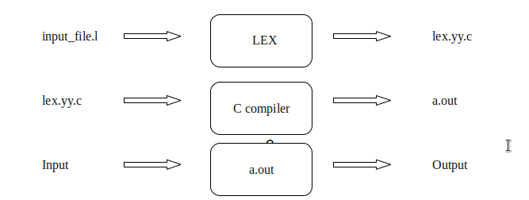
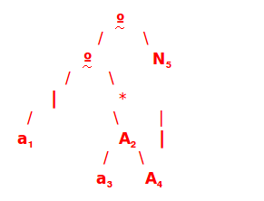
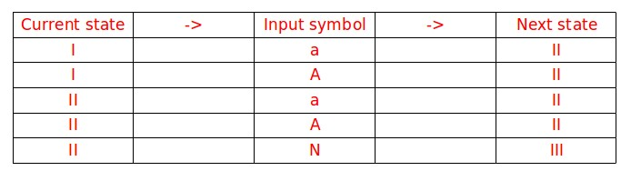
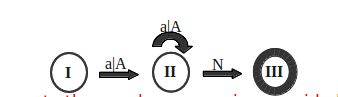

USING LEX
Introduction
LEX is a tool used to generate a lexical analyzer.
This document is a tutorial for the use of LEX for ExpL Compiler development.
Technically, LEX translates a set of regular expression specifications (given as input in input_file.l) into a C implementation of a corresponding finite state machine (lex.yy.c). This C program, when compiled, yields an executable lexical analyzer.

The source ExpL program is fed as the input to the the lexical analyzer which produces a sequence of tokens as output.
(Tokens are explained below). Conceptually, a lexical analyzer scans a given source ExpL program and produces an output of tokens.
Each token is specified by a token name. The token name is an abstract symbol representing the kind of lexical unit, e.g., a particular keyword, or a sequence of input characters denoting an identifier. The token names are the input symbols that the parser processes. For instance integer, boolean, begin, end, if, while etc. are tokens in ExpL.
“integer” {return ID_TYPE_INTEGER;}
This example demonstrates the specification of a rule in LEX.
The rule in this example specifies that the lexical analyzer must return the token named ID_TYPE_INTEGER when the pattern “integer” is found in the input file.
A rule in a LEX program comprises of a 'pattern' part (specified by a regular expression) and a corresponding (semantic) 'action' part (a sequence of C statements).
In the above example, “integer” is the pattern and {return ID_TYPE_INTEGER;} is the corresponding action. The statements in the action part will be executed when the pattern is detected in the input.
The structure of LEX programs
A LEX program consists of three sections : Declarations, Rules and Auxiliary functions
DECLARATIONS
%%
RULES
%%
AUXILIARY FUNCTIONS
2.1 Declarations
The declarations section consists of two parts, auxiliary declarations and regular definitions.
The auxiliary declarations are copied as such by LEX to the output lex.yy.c file. This C code consists of instructions to the C compiler and are not processed by the LEX tool.The auxiliary declarations (which are optional) are written in C language and are enclosed within ' %{ ' and ' %} ' .
It is generally used to declare functions, include header files, or define global variables and constants.
LEX allows the use of short-hands and extensions to regular expressions for the regular definitions.
A regular definition in LEX is of the form :
D R where D is the symbol representing the regular expression R.
Example:
2.2 Rules
Rules in a LEX program consists of two parts :
- 1. The pattern to be matched
- 2. The corresponding action to be executed
Example:
The pattern to be matched is specified as a regular expression.
Sample Input/Output for the above example:
I: 234
O: number
I: *
O: operator
I: 2+3
O: number operator number
LEX obtains the regular expressions of the symbols 'number' and 'op' from
the declarations section and generates code into a function yylex() in the lex.yy.c file.
This function checks the input stream for the first match to one of the patterns
specified and executes code in the action part corresponding to the pattern.
2.3 Auxiliary functions
LEX generates C code for the rules specified in the Rules section and places this code into a single function called yylex().
(To be discussed in detail later).
In addition to this LEX generated code, the programmer may wish to add his own code to the lex.yy.c file.
The auxiliary functions section allows the programmer to achieve this.
Example:
The auxiliary declarations and auxiliary functions are copied as such to the lex.yy.c file
Once the code is written, lex.yy.c maybe generated using the command lex "filename.l" and compiled as gcc lex.yy.c
The yyvariables
The following variables are offered by LEX to aid the programmer in designing sophisticated lexical analyzers.
These variables are accessible in the LEX program and are automatically declared by LEX in lex.yy.c.
3.1 yyin
yyin is a variable of the type FILE* and points to the input file.
yyin is defined by LEX automatically.
If the programmer assigns an input file to yyin in the auxiliary functions section, then yyin is set to point to that file.
Otherwise LEX assigns yyin to stdin(console input).
Example:
Excercise:
In the generated lex.yy.c file, the following code segment can be found under the definition of yylex().
if( ! yyin )
yyin = stdin;
Try to locate this code segment in the file lex.yy.c.
What could be the consequences of removing this code segment from lex.yy.c before compiling it for generating the
lexical analyzer?
The above statement indicates that if the programmer does not define yyin, then yylex() by default sets yyin to the console input.
Hence, any re-definition for yyin must be made before invoking yylex(). (This will be explained in detail later).
3.2 yytext
yytext is of type char* and it contains the lexeme currently found.
A lexeme is a sequence of characters in the input stream that matches some pattern in the Rules Section.
(In fact, it is the first matching sequence in the input from the position pointed to by yyin.)
Each invocation of the function yylex() results in yytext carrying a pointer to the lexeme found in
the input stream by yylex().
The value of yytext will be overwritten after the next yylex() invocation.
Example:
In the above example, if a lexeme is found for the pattern defined by number then corresponding action is executed .
Consider the following sample i/o,
Sample Input/Output:
I: 25
O: Found : 25
In this case when yylex() is called, the input is read from the location given by yyin and a string “25” is found as a match to
'number'.
This location of this string in the memory is pointed to by yytext.
The corresponding action in the above rule uses a built-in function atoi() to convert the string “25” (of type char*) to the integer 25 (of the type int) and then prints the result on the screen.
Note that the header file “stdlib.h” is called in the auxiliary declarations section in order to invoke atoi() in
the actions part of the rule.
NOTE: The lexeme found by LEX is stored in some memory allocated by LEX which can be accessed through the character pointer yytext.
NOTE: The %option noyywrap is used to inform the compiler that the function yywrap() has not been defined. We will see what this function does later on.
Exercise:
Suggest a modification in the above example to check whether a number found is even or odd.
3.3 yyleng
yyleng is a variable of the type int and it stores the length of the lexeme pointed to by yytext.
Example:
/* Declarations */
%%
/* Rules */
%%
{number} printf("Number of digits = %d",yyleng);
Sample Input/Output
I: 1234
O: Number of digits = 4
The yyfunctions
4.1 yylex()
yylex() is a function of return type int. LEX automatically defines yylex() in lex.yy.c but does not call it.
The programmer must call yylex() in the Auxiliary functions section of the LEX program.
LEX generates code for the definition of yylex() according to the rules specified in the Rules section.
NOTE: That yylex() need not necessarily be invoked in the Auxilary Declaration Section of LEX program when used with YACC.
Example:
Sample Input/Output :
I: 42
O: Found: 42
When yylex() is invoked, it reads the input as pointed to by yyin and scans
through the input looking for a matching pattern. When the input or a part of the input
matches one of the given patterns, yylex() executes the corresponding action associated
with the pattern as specified in the Rules section.
In the above example, since there is no explicit definition of
yyin, the input is taken from the console. If a match is found in the
input for the pattern number, yylex() executes the corresponding action , i.e.
return atoi(yytext). As a result yylex() returns the number matched. The value returned by yylex() is
stored in the variable num.
The value stored in this variable is then printed on screen using printf().
yylex() continues scanning the input
till one of the actions corresponding to a matched pattern
executes a return statement or till the end of input has
been encountered. In case of the above example, yylex() terminates immediately after executing the rule because it consists
of a return statement.
Note that if none of the actions in the Rules section executes a return statement, yylex() continues scanning for more matching patterns in the input file till the end of the file.
In the case of console input, yylex() would wait for more input through the console. The user will have to input ctrl+d in the terminal to terminate yylex(). If yylex() is called more than once, it simply starts scanning from the position in the input file where it had returned in the previous call.
Exercise:
What would be the outputs of the lexical analyzer generated by
the example LEX programs under section 3.2 and 4.1 for the following input :
25
32
44
Would both the outputs be the same? If not, explain why.
4.2 yywrap()
LEX declares the function yywrap() of return-type int in the file lex.yy.c .
LEX does not provide any definition for yywrap(). yylex() makes a call to yywrap()
when it encounters the end of input. If yywrap() returns zero (indicating false) yylex() assumes
there is more input and it continues scanning from the location pointed to by yyin.
If yywrap() returns a non-zero value (indicating true),
yylex() terminates the scanning process and returns 0 (i.e. “wraps up”).
If the programmer wishes to scan more than one input file using the generated lexical analyzer,
it can be simply done by setting yyin to a new input file in yywrap() and return 0.
As LEX does not define yywrap() in lex.yy.c file but
makes a call to it under yylex(),
the programmer must define it in the Auxiliary functions section
or provide %option noyywrap in the declarations section.
This options removes the call to yywrap() in the lex.yy.c file. Note that, it is mandatory to either define yywrap()
or indicate the absence using the %option feature. If not, LEX will flag an error
Example:
When yylex() finishes scanning the first input file, input_file.l yylex() invokes yywrap().
The above definition of yywrap() sets the input file pointer to input_file_2.l and returns 0 .
As a result, the scanner continues scanning in input_file_2.l .
When yylex() calls yywrap() on encountering EOF of input_file_2.l, yywrap() returns 1 and thus yylex() ceases scanning.
Exercise:
Suggest a modification in the above example LEX program to make the generated lexical analyzer read input
- -> Initially from the console and then from a file input_file.l
- -> Initially from a file input_file.l and then from the console
- -> Twice from the console
Even-Odd.l , a complete LEX program
Disambiguation Rules
yylex() uses two important disambiguation rules in selecting the right action to execute
in case there is more than one pattern that matches a string in the given input:
- 1. Choose the first match.
- 2. "Longest match" is preferred.
Example:
“break” { return BREAK; }
[a-zA-Z][a-zA-Z0-9]* { return IDENTIFIER; }
If "break" is found in the input, it is matched with the first pattern and yylex() returns BREAK. If "breakdown" is found, it is matched with the second pattern and yylex() returns IDENTIFIER. Note the use of disambiguation rules here.
Example:
/* Declarations section */
%%
“-” {return MINUS;}
“--” {return DECREMENT;}
%%
/* Auxiliary functions */
Assume that the function calling yylex() prints the name of the token.
Sample Input/Output :
I: -
O: MINUS
<
I: --
O: DECREMENT
I: ---
O: DECREMENT MINUS
Note that, in case of an -- input to the lexical analyzer, yylex() does not return two MINUS tokens,
but instead returns a DECREMENT token, by the second disambiguation rule.
Pattern matching using LEX
Conceptually, LEX constructs a finite state machine to recognize all the regular expression patterns specified
in the LEX program file. The code written by the programmer in the action part is executed when the machine is in accept state.
The lex.yy.c program stores information about the finite state machine in the form of a decision table (transition table).
A transition(current_state,input_char) function is used to access the decision table.
LEX makes it's decision table visible if we compile the program with the -T flag.
The finite state machine used by LEX is deterministic finite state automaton. The lex.yy.c simulates the DFA.
A token simulator program
In this program, the main() function obtains the tokens returned by yylex() and checks if the input contains a valid identifier.
Sample Input/Output :
I: Var9
O: Acceptable
When 'Var9' is provided as the input, the DFA constructed by LEX accepts the string,
and the corresponding action 'return ID' executed.
As a result yylex() returns the token ID, and the main() function prints 'Acceptable' on the screen.
Construction of a DFA from a regular expression
(This section explains how LEX converts a reqular expression to a finite automaton. An understanding of the contents of this section is not necessary to proceed to the next section.)
The construction of a DFA from a regular expression takes place in two steps.
- Constructing a syntax tree from the regular expression
- Converting the syntax tree into a DFA
9.1 The intermediate syntax tree
Consider the first rule in the token simulator program in section 8.
It consists of the following regular expression :
({low}|{upp})({low}|{upp})*({number})
For convenience in representation , let it be represented by :
( a | A ) ( a | A )* (N)
where, 'a' represents {low}, 'A' represents {upp} and 'N' represents {number}.
The syntax tree constructed for the above regular expression would look like :

In the above figure º represents the 'cat' (concatenation) operator,
* represents the 'star' operator (a unary operator) and | represents the
'or' operator. In the syntax tree the inner nodes are operators
while the leaves are the operands.
The subscript assigned to every leaf is called the position of the leaf. The positions have been assigned to the leaves starting from the left-most leaf proceedig towards the right. We are trying to represent the original regular expression with annotated positions. An annotated regular expression in this case:
( a1 | A2 ) ( a3 | A4 )* (N5)The position of a leaf plays a vital role in the process of constructing states for the DFA because it represents the possible position a token maybe found in the input stream.
NOTE: Each token may have multiple positions corresponding to it as it can be found in more than one leaves. For example 'a' can be possible found in the input at positions 1 and/or 3.
NOTE: This syntax tree is an intermediate data structure.
There will be no traces of this in lex.yy.c file, because it is only used in the construction of the DFA.
9.2 The intermediate syntax tree
Constructing the DFA involves two steps:
- 1. Constructing the set of states of the DFA
- 2. Constructing all the possible transitions made by the DFA from one state to another on different inputs.
The language represented by the regular expression ( a | A ) ( a | A )* (N),
can only possibly start with an 'a' or 'A'. From the syntax tree we may infer that these could only correspond to positions 1 or 2 . Let the set of these positions {1,2} be the start state of the DFA.
For convenience it has been named as state I.
Consider the position 1 (position of 'a'), it could be followed by either of the positions 3,4 or 5 (i.e, it can be followed by 'a','A' or 'N').
Let this be a new state {3,4,5} represented by II.
The position 2 ('A') could be possibly followed by either of the positions 3,4 or 5.
But a new state is not required as {3,4,5} has already been represented by II.
Similarly the positions 3 and 4 could be followed by the position 3 or 4 or 5.
If followed by 5, the DFA must accept and terminate (syntax tree ends at position 5).
Hence let the final (accept) state be III.
Thus, the transitions maybe formulated as :

9.3 The intermediate syntax tree
The DFA obtained for the above syntax tree would look like :

This DFA represents the regular expression provided as a specification
(i.e. pattern to be matched) in the first rule of the token
simulator program in section 9. When the DFA is in the final state i.e. III,
then the corresponding action is executed as instructed in the lex.yy.c file.
The constructed DFA is simulated using a simulation algorithm.
9.4 The DFA simulation algorithm
The working of the constructed DFA is simulated using the following algorithm.
DFA_simulator()
current_state = start_state
c = get_next_char()
while(c != EOF)
current_sate = transition(current_state , c)
c = get_next_char()
if(current_state ∈ Final_states)
/*ACCEPT*/
else
/*REJECT*/
The information about all the transitions made by the DFA
can be obtained from the decision
table (generally a two dimensional matrix) through the transition() function.
Using the generated lexical analyzer
In this document, we have learned to use LEX to build a lexical analyzer. A lexical analyzer generated by LEX can be used for lexical analysis of ExpL. Lexical analysis is the inital stage of compiling a source language. We will learn more about how to use the lexical analyzer in later stages of the documentation.
Exercises
1.Write a lex file
- 1.1 to count the number of lines, words, and characters in the input.
- 1.2 to count the number of integers and floating point numbers appearing in the input.
-
- 1.3 to list out all words of length three, starting with "A" to uppercase.
- 1,4 to list out all C-like comments (both single line and multi line comments) from a text file.
References
For further details on the topics covered in this document, the reader may refer to the following :
- 1. Compilers : Principles,Techniques and Tools by Alfred V.Aho, Monica S. Lam, Ravi Sethi and Jeffrey D.Ulman .
- 2. Modern Compiler Implementation in C by Andrew W.Appel
- 3. Flex & Bison by John Levine
- 4. http://dinosaur.compilertools.net/